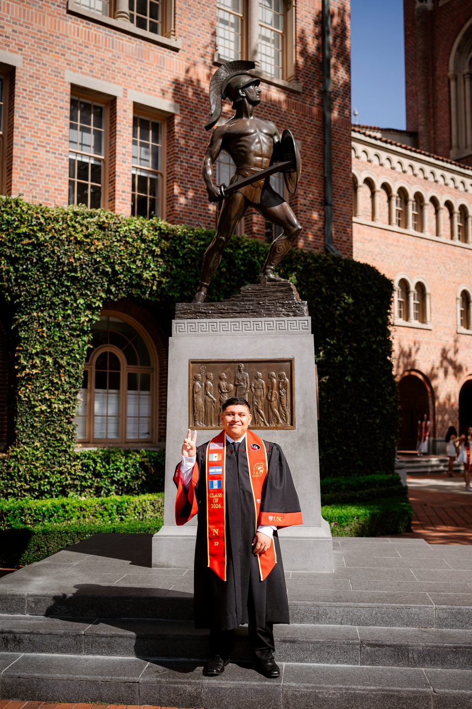
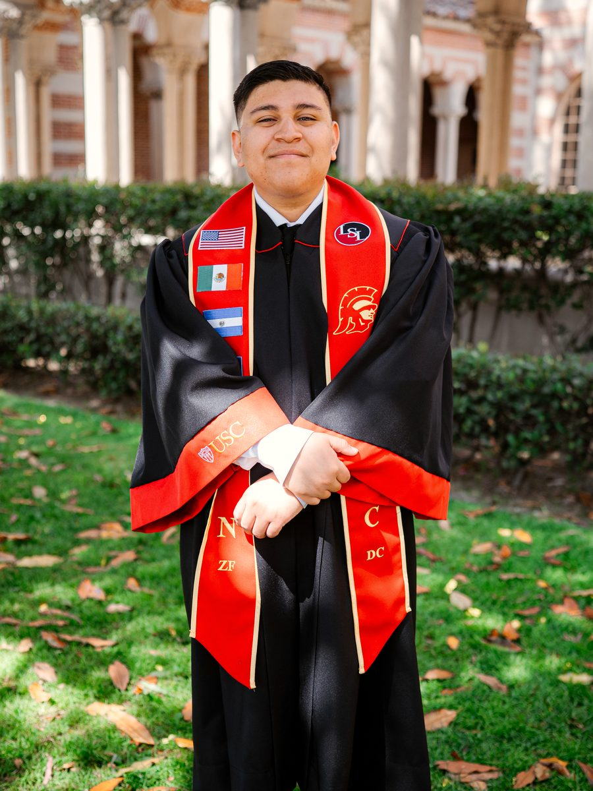

Sports & Entertainment
Athlete and talent representation, endorsement structures, and the deal mechanics behind media and live events.
Transactional Sports & Corporate Law
I'm a J.D. candidate at Loyola Law School and a USC Legal Studies alumnus, magna cum laude. My interest is the deal side — contracts, licensing, IP strategy, and the regulation that decides what an agreement can look like before anyone reaches the table.
Focus
My USC capstone examined regulatory instability in college athletics — NIL rights, the transfer portal, and the case for federal oversight. Writing it clarified something I keep returning to: the legal framework decides what deals are possible long before anyone starts negotiating.
Athlete and talent representation, endorsement structures, and the deal mechanics behind media and live events.
Transaction structure, diligence, and the agreements that allocate risk between parties who need each other.
Rights strategy across fast-moving industries — who owns what, for how long, and on which terms.
College athletics policy, the transfer portal, and the federal oversight question that reshapes the market underneath it.

I transferred in from community college, graduated magna cum laude, and put 450 hours into hunger relief across LA County. I intend to close deals for a living and still be useful to the neighborhoods I came from.USC Class of 2026
2022 — 2029
Nothing here happened one at a time. Community college and USC overlapped with campaign work, court internships, and a firm job — the bars show how much ran at once.
Legal & Courts Leadership & Service Education
Current Work
Assign counsel across simultaneous LASC courtrooms — trials, ex partes, motions, OSCs — with no duplicate appearances and zero missed hearings.
Audit every active matter in Clio against the calendar before each hearing, consistently recovering $350–$2,500 per matter in unbilled appearance and motion preparation fees.
Prepare and ship sheriff writ packages — SER-001, SER-001A, EJ-130 — to LASD civil service, cutting processing time and keeping full Clio tracking compliance.
Draft and e-file through the LASC Attorney Portal and Countrywide, then manage proof of service across represented and unrepresented defendants.
Systems — Clio · LASC Attorney Portal · Countrywide E-Filing · Adobe Acrobat · Front · Stamps · Microsoft Excel

Background
I started at Glendale Community College and transferred to USC, where I graduated magna cum laude with Dean's List honors every semester. Along the way I served as Director of Internal Outreach for Latino Students in Law and as an Associate Editor for the USC Journal of Law and Society. In both roles, expanding access to the profession wasn't a side project — it was the point.
Internships at the Los Angeles Superior Court and the District Attorney's Office gave me a working view of how the system actually runs, across criminal, civil, family, dependency, and mental health departments. Outside of that, 450 hours with AmeriCorps College Corps distributing food to families across LA County shaped how I think about who the law is actually for.
I read and speak Spanish conversationally. Outside the office it's college athletics and NIL policy, Raiders football, and jazz and rap in roughly equal measure.
Recognition
Connect
I start at Loyola this fall. Between now and my 1L summer, the most useful thing anyone can offer is twenty minutes — how a transactional group actually staffs juniors, what a first-year deal associate's week looks like, what you wish you'd known before OCI.
I've had those conversations with attorneys at Gibson Dunn, Kirkland & Ellis, and Willkie Farr, and each one changed how I'm planning the next three years. If any of the below sits in your world, I'd like to hear from you.